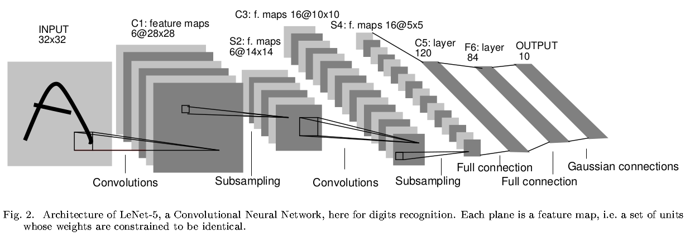
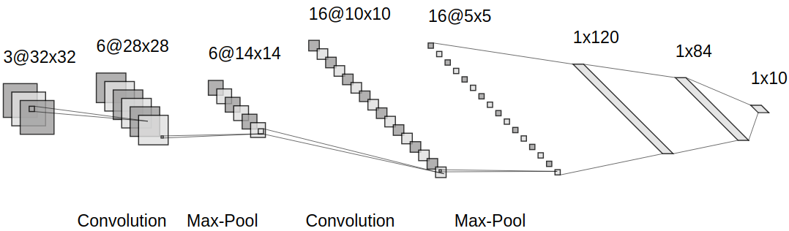

参考：
以LeNet-5为例，进行卷积神经网络的矩阵推导
计算符号
参考lecun-98，卷积层标记为$Cx$，池化层标记为$Sx$，全连接层标记为$Fx$，比如$C1$表示第一层是卷积层
LeNet-5简介
LeNet-5共有7层（不包含输入层）

$C1$有
6个滤波器，感受野尺寸为$5\times 5$，步长为$1$，零填充为$0$，所以$C1$共有$5\cdot 5\cdot 6+6=156$个训练参数，输出激活图尺寸为$28\times 28$$S2$感受野大小为$2\times 2$，步长为$2$，将输入数据体4个神经元相加后乘以一个可训练参数，再加上一个偏置值，最后进行$sigmoid$操作，所以$S2$共有$2\times 6=12$个训练参数，输出激活图尺寸为$14\times 14$
$C3$有
16个滤波器，感受野尺寸为$5\times 5$，步长为$1$, 零填充为$0$，所以输出激活图尺寸为$10\times 10$- $C3$的滤波器没有和$S2$完全连接：前6个滤波器和$S2$连续的3个激活图交互，接下来6个滤波器和$S2$连续的4个激活图交互，接下来3个滤波器和$S2$不连续的4个激活图交互，最后一个滤波器和$S2$全连接
- $C3$的参数个数是$(5\cdot 5)\cdot (3\cdot 6+4\cdot 6+4\cdot 3+6\cdot 1)+16=1516$
$S4$和$S2$一样，所以共有$2\times 16=32$个可学习参数，输出激活图尺寸为$5\times 5$
$C5$有
120个滤波器，感受野大小为$5\times 5$，步长为$1$，零填充为$0$，所以$C5$共有$5\cdot 5\cdot 16\cdot 120+120=48120$个参数，输出激活图尺寸为$1\times 1$，输出大小为$1\times 1\times 120$$F6$有
84个神经元，激活函数是$tanh$，参数个数是$120\times 84+84=10164$个训练参数$F7$有
10个神经元，得到84个输入后，不再执行点积运算，而是执行欧氏径向基函数（euclidean radial basis function）：损失函数是均方误差（
Mean Squared Error, MSE）
最早的LeNet-5在1998年提出，经过多年发展，一些实现细节发生了变化，其中一个版本如下

$C1$有
6个滤波器，感受野尺寸为$5\times 5$，步长为$1$，零填充为$0$，激活函数是$relu$，所以$C1$共有$5\cdot 5\cdot 6+6=156$个训练参数，输出激活图尺寸为$28\times 28$$S2$感受野大小为$2\times 2$，步长为$2$，使用$\max$运算，所以输出激活图尺寸为$14\times 14$
$C3$有
16个滤波器，感受野尺寸为$5\times 5$，步长为$1$, 零填充为$0$，激活函数是$relu$，所以$C3$参数个数是$5\cdot 5\cdot 6\cdot 16+16=2416$，输出激活图尺寸为$10\times 10$$S4$和$S2$一样，步长为$2$，使用$\max$运算，所以输出激活图尺寸为$5\times 5$
$C5$有
120个滤波器，感受野大小为$5\times 5$，步长为$1$，零填充为$0$，激活函数为$relu$，所以$C5$共有$5\cdot 5\cdot 16\cdot 120+120=48120$，输出激活图尺寸为$1\times 1$，输出大小为$1\times 120$$F6$有
84个神经元，激活函数是$relu$，参数个数是$120\times 84+84=10164$个训练参数，输出大小为$1\times 84$$F7$有
10个神经元，参数个数是$84\times 10+10=850$个，输出大小为$1\times 10$评分函数使用$softmax$
损失函数是交叉熵损失（
Cross Entropy Loss）
| 输入 | 卷积核 | 步长 | 零填充 | 输出 | |
|---|---|---|---|---|---|
| C1 | 32x32x3 | 5x5 | 1 | 0 | 28x28x6 |
| S2 | 28x28x6 | 2x2 | 2 | \ | 14x14x6 |
| C3 | 14x14x6 | 5x5 | 1 | 0 | 10x10x16 |
| S4 | 10x10x16 | 2x2 | 2 | \ | 5x5x16 |
| C5 | 5x5x16 | 120 | 0 | 0 | 1x120 |
| F6 | 1x120 | 84 | \ | \ | 1x84 |
| F7 | 1x84 | 10 | \ | \ | 1x10 |
卷积层转全连接层
参考：Implementation as Matrix Multiplication
卷积层滤波器在输入数据体的局部区域执行点积操作，将每次局部连接数据体拉伸为行向量，那么卷积操作就等同于矩阵乘法，变成全连接层运算
比如输入图像大小为$32\times 32\times 3$，卷积层滤波器大小为$5\times 5\times 3$，步长为$1$，零填充为$0$，共有6个
那么等同于全连接层的输入维度为$5\cdot 5\cdot 3=125$，共有$((32-5)/1+1)=784$个局部连接，所以矩阵运算如下：
得到输出数据$Y$后再拉伸回$55\times 55\times 6$，就是下一层的输入数据体
池化层转全连接层
池化层滤波器在输入数据体的激活图上执行$\max$操作，将每次局部连接区域拉伸为行向量，同样可以将池化层操作转换成全连接层操作
比如输入数据体大小为$28\times 28\times 6$，池化层滤波器空间尺寸$2\times 2$，步长为$2$
那么每次连接的向量大小是$2\cdot 2=4$，每个激活图共有$(28/2)^{2}=196$次局部连接，整个输入数据体共有$196\cdot 6=1176$次局部连接，所以运算如下：
得到输出数据$Y$后再拉伸回$14\times 14\times 6$，就是下一层的输入数据体
矩阵计算
进行MNIST数据集的分类
前向传播
输入层
卷积层$C1$
共6个滤波器，每个滤波器空间尺寸为$5\times 5$，步长为$1$, 零填充为$0$
输出空间尺寸为$(32-5-2\cdot 0)/1+1=28$
所以单次卷积操作的向量大小为$5\cdot 5\cdot 1=25$，单个滤波器有$28\cdot 28=784$个局部连接
输出数据体$output^{(1)}\in R^{28\times 28\times 6}$
池化层$S2$
执行$\max$运算，每个滤波器空间尺寸$2\times 2$，步长为$2$
输出空间尺寸为$(28-2)/2+1=14$
所以单次$\max$操作的向量大小为$2\cdot 2=4$，单个滤波器有$14\cdot 14\cdot 6=1176$个局部连接
$argz^{(2)} = argmax(a^{(1)})\in R^{1176}$，每个值表示$a^{(1)}$中每行最大值下标
输出数据体$output^{(2)}\in R^{14\times 14\times 6}$
卷积层$C3$
共16个滤波器，每个滤波器空间尺寸为$5\times 5$，步长为$1$, 零填充为$0$
输出空间尺寸为$(14-5+2\cdot 0)/1+1=10$
所以单次卷积操作的向量大小为$5\cdot 5\cdot 6=150$，单个滤波器有$10\cdot 10=100$个局部连接
输出数据体$output^{(3)}\in R^{10\times 10\times 16}$
池化层$S4$
执行$\max$运算，每个滤波器空间尺寸$2\times 2$，步长为$2$
输出空间尺寸为$(10-2)/2+1=5$
所以单次$\max$操作的向量大小为$2\cdot 2=4$，单个滤波器有$5\cdot 5\cdot 16=400$个局部连接
$argz^{(4)} = argmax(a^{(3)})\in R^{400}$，每个值表示$a^{(3)}$中每行最大值下标
输出数据体$output^{(4)}\in R^{5\times 5\times 16}$
卷积层$C5$
共120个滤波器，每个滤波器空间尺寸为$5\times 5$，步长为$1$, 零填充为$0$
输出空间尺寸为$(5-5+2\cdot 0)/1+1=1$
所以单次卷积操作的向量大小为$5\cdot 5\cdot 16=400$，单个滤波器有$1\cdot 1=1$个局部连接
输出数据体$output^{(5)}\in R^{1\times 120}$
全连接层$F6$
神经元个数为$84$
输出数据体$output^{(6)}\in R^{1\times 84}$
输出层$F7$
神经元个数为$10$
输出数据体$output^{(7)}\in R^{1\times 10}$
分类概率
$A\in R^{10\times 1}, B\in R^{10\times 1}$都是全$1$向量
损失值
$Y\in R^{1\times 10}$，仅有正确类别为1, 其余为0
反向传播
输出层$F7$
求输入向量$z^{(7)}$梯度
其他梯度
求权重矩阵$W^{(7)}$梯度
求偏置向量$b^{(7)}$梯度
求上一层输出向量$a^{(6)}$梯度
全连接层$F6$
求输入向量$z^{(6)}$梯度
其他梯度
求权重矩阵$w^{(6)}$梯度
求偏置向量$b^{(6)}$梯度
求上一层输出向量$a^{(5)}$梯度
卷积层$C5$
求输入向量$z^{(5)}$梯度
其他梯度
求权重矩阵$W^{(5)}$梯度
求偏置向量$b^{(5)}$梯度
求上一层输出向量$a^{(4)}$梯度
池化层$S4$
将$a^{(4)}$梯度重置回$output^{(4)}$梯度，再重置为$y^{(4)}$梯度
因为卷积层$C5$滤波器的空间尺寸和$output^{(4)}$的空间尺寸一致，所以不需要将$a^{(4)}$先转换成$output^{(4)}$，再转换成$y^{(4)}$，可以一步到位
求输入向量$z^{(4)}$梯度
上一层输出向量$a^{(3)}$梯度
配合$argz^{(4)}$，最大值梯度和$z^{(4)}$一致，其余梯度为$0$
卷积层$C3$
将$a^{(3)}$梯度重置回$output^{(3)}$梯度，再重置为$y^{(3)}$梯度
求输入向量$z^{(3)}$梯度
其他梯度
求权重矩阵$W^{(3)}$梯度
求偏置向量$b^{(3)}$梯度
$N$表示$dz^{(3)}$的行数
求上一层输出向量$a^{(2)}$梯度
池化层$S2$
$C3$输入层梯度大小为$100\times 150$，是在$S2$输出数据体$output^{(2)}$上采样获得，将$da^{(2)}$重采样回$output^{(2)}$梯度矩阵，再重置回$1176\times 1$大小，就是$z^{(2)}$的梯度
上一层输出向量$a^{(1)}$梯度
配合$argz^{(2)}$，最大值梯度和$z^{(2)}$一致，其余梯度为$0$
卷积层$C1$
将$a^{(1)}$梯度重置回$output^{(1)}$梯度，再重置为$y^{(1)}$梯度
求输入向量$z^{(1)}$梯度
其他梯度
求权重矩阵$W^{(1)}$梯度
求偏置向量$b^{(1)}$梯度
$N$表示$dz^{(1)}$的行数